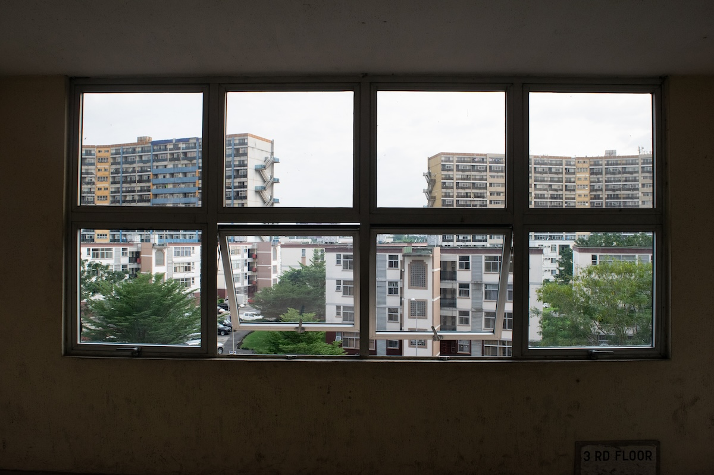

| Create Date : 2017:10:01 11:35:44 | ISO : 200 | Exposure Time : 1/400 | F Number : 10.0 | Focal Length : 55.0 mm |

| Create Date : 2017:09:25 12:28:16 | ISO : 400 | Exposure Time : 1/80 | F Number : 4.5 | Focal Length : 55.0 mm |
| Create Date : 2017:09:26 07:45:56 | ISO : 1600 | Exposure Time : 1/3200 | F Number : 8.0 | Focal Length : 55.0 mm |
| Create Date : 2017:09:26 07:56:59 | ISO : 1600 | Exposure Time : 1/3200 | F Number : 8.0 | Focal Length : 92.0 mm |
| Create Date : 2017:09:26 07:58:08 | ISO : 1600 | Exposure Time : 1/3200 | F Number : 7.1 | Focal Length : 92.0 mm |
| Create Date : 2017:09:26 07:58:34 | ISO : 1600 | Exposure Time : 1/3200 | F Number : 7.1 | Focal Length : 82.0 mm |
| Create Date : 2017:09:26 08:45:12 | ISO : 1600 | Exposure Time : 1/3200 | F Number : 8.0 | Focal Length : 55.0 mm |
| Create Date : 2017:09:26 11:34:46 | ISO : 100 | Exposure Time : 1/125 | F Number : 5.6 | Focal Length : 55.0 mm |
| Create Date : 2017:09:26 11:44:24 | ISO : 800 | Exposure Time : 1/400 | F Number : 10.0 | Focal Length : 18.0 mm |

| Create Date : 2017:09:27 12:45:04 | ISO : 800 | Exposure Time : 1/2500 | F Number : 5.6 | Focal Length : 165.0 mm |
| Create Date : 2017:10:01 09:20:47 | ISO : 800 | Exposure Time : 1/4000 | F Number : 4.5 | Focal Length : 105.0 mm |
| Create Date : 2017:10:01 09:21:35 | ISO : 100 | Exposure Time : 1/640 | F Number : 4.5 | Focal Length : 95.0 mm |
| Create Date : 2017:10:01 11:35:44 | ISO : 200 | Exposure Time : 1/400 | F Number : 10.0 | Focal Length : 55.0 mm |
| Create Date : 2017:10:01 12:09:36 | ISO : 200 | Exposure Time : 1/500 | F Number : 11.0 | Focal Length : 116.0 mm |
| Create Date : 2017:10:01 12:15:30 | ISO : 200 | Exposure Time : 1/400 | F Number : 10.0 | Focal Length : 130.0 mm |
| Create Date : 2017:10:01 12:16:04 | ISO : 200 | Exposure Time : 1/250 | F Number : 8.0 | Focal Length : 55.0 mm |
| Create Date : 2017:09:26 11:49:22 | ISO : 180 | Exposure Time : 1/500 | F Number : 8.0 | Focal Length : 18.0 mm |